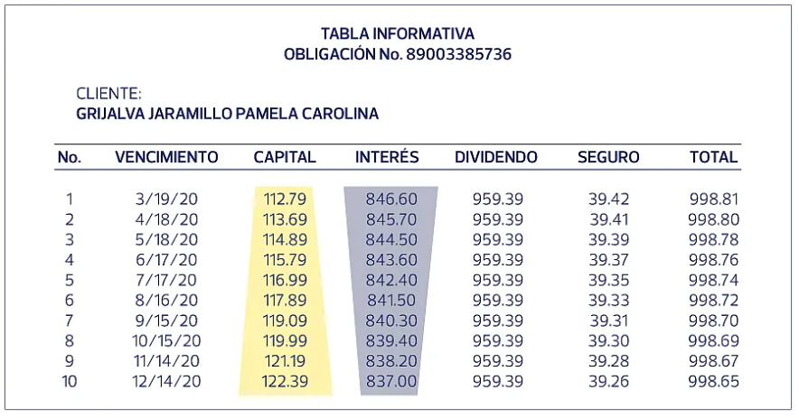

Tablas de Amortización de Deuda
Matemáticas Financieras, Actuaría y Ciencia de Datos
INTRODUCCIÓN
Materia: Matemáticas Financieras, Actuaría y Ciencia de Datos
Profesor: Oscar de la Torre
Equipo:
- Estefanía Zarco García
- Moisés Vitela Silva
- Diego Alberto Montes Ramírez
- Diego Quintero Pérez
- Valeria Beltrán González
Índice
- ¿Qué es una tabla de amortización?
- ¿Para qué sirve?
- Elementos básicos de una deuda
- Tipos de amortización más comunes
- Cómo se construye una tabla de amortización
- Ejemplo completo paso a paso
- Conclusión
1. ¿Qué es una tabla de amortización?
Una tabla de amortización de deuda es una tabla que muestra, periodo por periodo:
- Cuánto se paga en total.
- De ese pago, cuánto es interés.
- Cuánto es amortización de capital (lo que realmente baja la deuda).
- El saldo insoluto (lo que todavía se debe) después de cada pago.
1. ¿Qué es una tabla de amortización?
En otras palabras:
Es una forma ordenada y clara de ver cómo se va pagando un préstamo en el tiempo, de inicio a fin.
Muestra el “camino” de la deuda:
- Desde el momento en que se pide el dinero.
- Hasta el momento en que se termina de pagar.
2. ¿Para qué sirve?
La tabla de amortización sirve para:
- Entender cuánto estás pagando de intereses y cuánto realmente baja tu deuda.
- Planear tus finanzas personales (hipoteca, auto, tarjeta de crédito, etc.).
- Comparar diferentes créditos:
- ¿Cuál conviene más?
- ¿Qué plazo es mejor?
- ¿Qué tasa de interés es más razonable?
2. ¿Para qué sirve?
También es muy útil para:
- Bancos y financieras:
- Diseñar productos de crédito.
- Calcular intereses y saldos.
- Actuaría y ciencia de datos:
- Modelar carteras de crédito.
- Estimar flujos de efectivo futuros.
- Evaluar riesgo de impago.
3. Elementos básicos de una deuda
Para construir una tabla de amortización, siempre tenemos:
Principal o capital inicial Monto del préstamo que se recibe al inicio.
Plazo Tiempo total para pagar (años, meses, quincenas, etc.).
Frecuencia de pago Cada cuánto se paga (mensual, quincenal, anual, etc.).
3. Elementos básicos de una deuda
Otros elementos clave:
Tasa de interés nominal Por ejemplo, 12% anual.
Tasa de interés efectiva del periodo Es la tasa que se aplica en cada periodo de pago. Por ejemplo, si la tasa nominal anual es 12% y los pagos son mensuales: tasa mensual ≈ 12% / 12 = 1% al mes (en el caso simple).
3. Elementos básicos de una deuda
Y en cada periodo tendremos:
Interés del periodo Depende del saldo insoluto y de la tasa.
Amortización del periodo Parte del pago que reduce el capital.
Pago total del periodo Interés + amortización.
Saldo insoluto Saldo del préstamo después del pago.
4. Tipos de amortización más comunes
Hay varios esquemas de amortización, entre los más usados están:
- Amortización francesa
- Amortización alemana
- Amortización americana (o con pago único de capital)
En esta presentación nos enfocaremos principalmente en la amortización francesa, ya que es la más común en créditos personales e hipotecarios.
4. Amortización francesa
Características:
- El pago periódico es constante durante todo el plazo.
- En los primeros periodos:
- El interés es alto.
- La amortización de capital es baja.
- Con el tiempo:
- El interés baja.
- La amortización de capital sube.
Esto hace que el pago sea más cómodo y predecible para el deudor.
4. Amortización francesa
Fórmula del pago periódico (cuota).
- \[P\] = principal (monto del préstamo).
- \[i\] = tasa de interés por período.
- \[n\] = número total de períodos.
- \[R\] = pago periódico. \[R = \frac{P \cdot i}{1 - (1 + i)^{-n}}\]
5. Cómo se construye una tabla de amortización
Pasos generales para un esquema francés:
- Calcular la tasa de interés por periodo.
- Calcular el pago periódico, usando la fórmula.
- Para cada periodo:
- Calcular el interés: saldo inicial del periodo × tasa del periodo.
- Calcular la amortización: pago \[ R \] − interés.
- Calcular el saldo final: saldo inicial − amortización.
5. Cómo se construye una tabla de amortización
Estructura típica de la tabla:
- Periodo
- Saldo inicial
- Pago
- Interés
- Amortización
- Saldo final
Se repite el cálculo periodo a periodo hasta que el saldo final llegue a cero
Ejemplo Amortización Francesa

6. Ejemplo: datos del problema
Supongamos el siguiente crédito:
- Monto del préstamo: 10,000 pesos.
- Tasa de interés nominal anual: 12%.
- Pagos: mensuales.
- Plazo: 12 meses.
- Esquema: amortización francesa (pago mensual constante).
6. Ejemplo: tasa del periodo
Como la tasa nominal anual es 12% y los pagos son mensuales, usamos la aproximación simple:
- Tasa de interés mensual \[ i = 12\% / 12 = 1\% \] por mes.
- En forma decimal: \[ i = 0.01 \]
- Número de periodos \[ n = 12 \]
- Principal \[ P = 10{,}000 \]
6. Ejemplo: cálculo del pago R
Usamos la fórmula:
\[R = \frac{P \cdot i}{1 - (1 + i)^{-n}}\]
Sustituyendo:
- \[ P = 10{,}000 \]
- \[ i = 0.01 \]
- \[ n = 12 \]
Podemos calcular:
\[R \approx \frac{10{,}000 \cdot 0.01}{1 - (1.01)^{-12}}\]
El resultado es aproximadamente:
- \[ R \approx 888.49 \] pesos (pago mensual constante).
6. Ejemplo: estructura de la tabla
La tabla tendrá 12 filas, una por cada mes, con las columnas:
- Periodo (1, 2, 3, …, 12)
- Saldo inicial
- Pago (888.49)
- Interés del periodo
- Amortización del periodo
- Saldo final
6. Ejemplo: periodo 1
Periodo 1:
- Saldo inicial: 10,000.00
- Interés: 10,000.00 × 0.01 = 100.00
- Pago: 888.49
- Amortización: 888.49 − 100.00 = 788.49
- Saldo final: 10,000.00 − 788.49 = 9,211.51
6. Ejemplo: periodo 2
Periodo 2:
- Saldo inicial: 9,211.51
- Interés: 9,211.51 × 0.01 ≈ 92.12
- Pago: 888.49
- Amortización: 888.49 − 92.12 ≈ 796.37
- Saldo final: 9,211.51 − 796.37 ≈ 8,415.14
6. Ejemplo: esquema general
Siguiendo la misma lógica, se calculan todos los periodos hasta el 12.
En cada periodo:
- El interés disminuye, porque se calcula sobre un saldo menor.
- La amortización aumenta, porque el pago es constante.
- El saldo final va bajando hasta llegar prácticamente a cero en el último periodo.
6. Ejemplo: vista resumida de la tabla
La tabla final (de manera resumida) se ve así:
| Periodo | Saldo inicial | Pago | Interés | Amortización | Saldo final |
|---|---|---|---|---|---|
| 1 | 10,000.00 | 888.49 | 100.00 | 788.49 | 9,211.51 |
| 2 | 9,211.51 | 888.49 | 92.12 | 796.37 | 8,415.14 |
| … | … | … | … | … | … |
| 12 | ≈ 879.00 | 888.49 | ≈ 8.79 | ≈ 879.70 | ≈ 0.00 |
(Los valores intermedios se calculan con la misma fórmula periodo a periodo.)
7. Conclusión
Las tablas de amortización son una herramienta esencial para entender cómo se paga una deuda en el tiempo: permiten ver claramente cuánto de cada pago se va a intereses y cuánto realmente reduce el capital, es muy común porque da estabilidad al deudor ya que:
- Tomar mejores decisiones financieras.
- Evitar sobreendeudarse.
- Evaluar si le conviene adelantar pagos o cambiar el plazo.